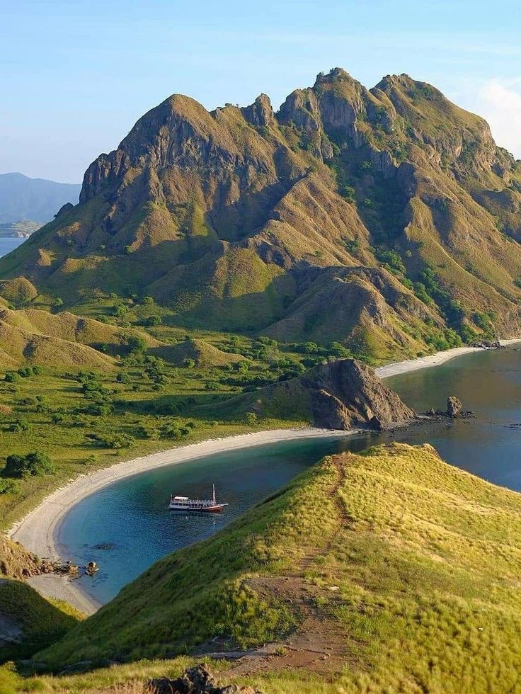
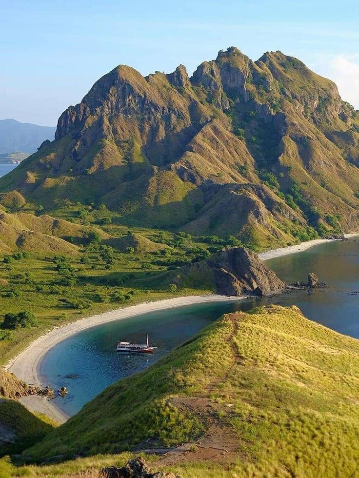

Menjelajah Keindahan Alam Indonesia
Indonesia memiliki kekayaan alam yang begitu memukau. Dari Sabang hingga Merauke, ada banyak destinasi wisata alam yang bisa dikunjungi...
Indonesia memiliki kekayaan alam yang begitu memukau. Dari Sabang hingga Merauke, ada banyak destinasi wisata alam yang bisa dikunjungi...
Temukan keindahan alam Indonesia dari Sabang hingga Merauke. Blog ini didedikasikan untuk Anda yang ingin menjelajahi berbagai pesona alam yang tersebar di seluruh Nusantara. Mulai dari pantai berpasir putih, gunung menjulang tinggi, hingga hutan tropis yang lebat, setiap destinasi menawarkan pengalaman yang tak terlupakan. Indonesia memiliki kekayaan alam yang begitu beragam dan mempesona, dan melalui blog ini, kami ingin membantu Anda menemukan keajaiban di setiap sudut negeri ini.
Berikut beberapa destinasi wisata alam favorit yang wajib Anda kunjungi di Indonesia:
Lihat foto-foto indah dari berbagai destinasi wisata alam di Indonesia.


Hubungi kami untuk informasi lebih lanjut mengenai destinasi wisata dan tips perjalanan.
Email: info@wisataalam.com
Telepon: +62 812 3456 7890